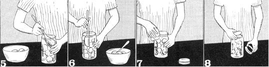

How To Preserve Produce Without Refrigeration
By Frank Garrett
July/August 1971
Believe it or not, it is possible to live without refrigeration. Long before the advent of home coolers and freezers, the problems of food storage and preservation had been solved . . . but this invaluable knowledge has been largely forgotten by our modern "quick and easy" society.
Yes, it certainly is both fast and easy to cram an armload of frozen supermarket food into the freezer or refrigerator. It's become so natural to do exactly that, in fact, that we now often completely overlook the home refrigeration unit's definite limitations.
For instance, it's impossible to store a year's supply of food in a refrigerator or freezer. If you raise all or most of what your family eats, then, refrigeration is definitely not a practical means of preservation.
And did you realize that food frozen or refrigerated for longer than three months loses both its flavor and appearance . . . and the greater portion of its nutritional value? Some edibles become positively revolting when frozen overlong.
Consider, also, what happens to a big freezer of frozen food during a major, lengthy power failure (and more of those are predicted during the coming decade). It only takes about two days without electricity to turn a marvelous store of frozen victuals into a sodden, rotting mess.
There's a money angle to consider too. Operating expenses for a home refrigerating unit are nominal-probably not more than a couple of dollars a month-but that is still bread you could use elsewhere (like for a subscription to MOTHER). And think of all the nice, useful things you could buy with the money you'd get if you sold your refrigerator or freezer. Or-if the unit is too old or useless to sell-you can still make money with it by turning it on its back, filling it with dirt and table scraps and sprinkling in a handful of fat earthworms. Within a year, you'll be able to sell livestock from this worm farm to all the fishermen and organic gardeners in your neighborhood!
Well, chances are you won't want to take that drastic a step . . . but if you've read this far, I assume that you are seriously interested in learning to can and preserve food without refrigeration. Your mother may have done it, your mother's mother probably did and your mother's mother's mother most certainly fed a family without benefit of the electric refrigerator. If great-grandma did it, you can too. It's basic as breathing and, after awhile, you'll begin to look forward to the fun each year!
THREE MAJOR METHODS
Meat and dairy products are another story altogether and will not be covered in this article but fruits and vegetables can be preserved at home without refrigeration by three methods: storage, drying and canning.
Simple storage is, by far, the oldest method of preserving food. It's also the easiest. Perishables to be kept by this process are merely placed in a cool, dry environment such as a cellar or specially-constructed hole in the ground. Only a limited number of fruits and vegetables can be preserved in this fashion, however, and only for a limited period of time.
Drying is another easy and quite old (dried foods have been found in human settlements dating back to 4,000 B.C.) method of keeping produce. In this process, spoilage is prevented by removing most of the food's natural water. Many edibles can be dried . . . but just as many cannot.
In 1809, the French government presented an award to Nicolar Appert for his discovery of the modern canning process. This is the most versatile of all food preservation methods. It consists of the destruction by heat of the micro-organisms which normally cause food to decay and the prevention of their re-entry into the food by an air-tight seal. Naturally, foods of varying composition must be processed differently but the principle is still the same.
Above all else, canning preserves nutritional value. Except for the initial loss by heat degradation (which occurs with all cooked foods), all the vitamins, minerals, trace elements and delicious flavor of the fresh produce are sealed right inside the can for an indefinite storage period. Ole Nick Appert really came up with something!
SIMPLE STORAGE: In The Garden
The simplest storage of all, I guess, is no storage at all. Jerusalem artichokes, for example, are very poor indoor keepers but they may be left in the ground indefinitely after first frost and dug throughout the winter as needed. Other crops-such as kale, collards, parsnips, salsify, leeks and Brussel sprouts-also withstand cold weather readily and can be left in the ground right through the winter in all but the most severe climates. Freezing actually improves the flavor of parsnips, salsify and kale but a protective mulch of two inches of straw is usually laid down over crops left in the garden in this manner.
SIMPLE STORAGE: Root Cellar
Most root crops and a few fruits can be stored indoors in a deep cellar or in a specially constructed root cellar (some for a year or longer). The important thing to remember is to keep the produce dry and cool ( between 50° F and 55° F). EDITORS NOTE: General recommendations for a root cellar call for higher humidity (around 80%) and lower temperatures (around 34° F) for the storage of most produce. See NOTE at bottom of Figure 1 for further details.
Vegetables which can be kept in a cellar include all types of potatoes, sweet potatoes, yams, beets, turnips, parsnips, horseradish, radishes, rutabagas, salsify, carrots, leeks, onions, kohlrabi . . . and almost any other root crop you can think of.
NOTE: An excellent inexpensive source of diagrams and information on root cellars is Storing Vegetables and Fruits in Basements, Cellars, Outbuildings and Pits. It costs only 15 cents from:
SUPERINTENDENT OF DOCUMENTS
U.S. Government Printing Office
Washington, D.C. 20402
FIGURE 2. how to build a root cellar
A root cellar needs to breath and a ventilator is necessary. It should be 4 to 6 inches square, extend three to four feet above the dirt that covers the cellar and must have a rain cap. ' Plug the vent with rags or paper in extremely cold weather. A vestibule entrance with two doors insulates the front. A root cellar is easiest to build and handiest to use when dug into a fairly steep bank as near to the kitchen door as possible. Good drainage is important. Either wooden flumes or tiles should be buried in the earth floor. Peeled log or wooden walls can be used (put a sheet of plastic film between the walls and the earth) but concrete or cement block will last a lot longer. Three or more feet of dirt on roof.
Select vegetables which are firm and sound. Remove excess clinging dirt, butdo not wash the produce! Place the vegetables carefully in boxes or bins. If you toss the produce around and bruise it, you may well find it rotted the first time you go down into your cellar for a nice bunch of turnips.
Storage bins or boxes should be constructed so that air can circulate around the vegetables. This can be easily accomplished by leaving spaces between the wooden slats when the containers are constructed. Wire baskets may also be used as storage containers.
If you have neither wooden boxes nor wire baskets, you'll find that root vegetables store quite satisfactorily stacked on large, flat boards . . . as long as they're kept dry and cool. Bulbous root vegetables, such as onions, will keep much longer if tied by their tops into a bunch and hung up in the cellar.
Winter squash, cabbage, broccoli, celery, Brussel sprouts, cauliflower, apples, melons and quince are other vegetables and fruits that will keep in a root cellar but they are considerably more delicate than root vegetables and should be handled accordingly. Of this group, only cabbage and winter squash can be safely stacked in bins. The other vegetables may not be stacked. Of the fruits, only apples may be stacked . . . and, of the apples, only select hard apples free of blemish should be stored. Just one apple with a soft spot on it can cause total disaster in your apple barrel.
Green beans, lima beans, peas, okra, cucumbers, eggplant, peppers, summer squash, green tomatoes and most fruit will remain good for up to one month in a root cellar. Spread them on shelves or benches and you'll find their quality actually improves as they slowly come to full ripeness in the cellar . . . but use this produce quickly as it will deteriorate rapidly.
If you've never tried root cellar storage before, Figure 1 should help get you off to a good start.
DRYING
Many fruits and vegetables which cannot be stored may be readily preserved by drying. When the method can be used, drying is one of the most effective means of food preservation because dried foods can be held indefinitely as long as they are kept dry.
The range of edibles which may be dried includes tuberous and bulbous root vegetables, pod beans, shelled beans, cereal and bread grains, celery, herbs, peas, peppers and fruits with high sugar and low moisture content. Drying is no more difficult than simple storage but it does involve more work. The end result, however, is well worth the extra effort.
For this method of preservation, food is first properly prepared (either mashed into a pulp, cut into small pieces or strung on a string) and then dried in one of three ways.
Apricots, peaches, wild persimmons and other like fruits can be preserved as "leather" by mashing the fruit into a pulp, spreading it in a quarter-inch thick layer across almost any flat, clean surface and letting it air and sun dry (see PERSIMMONS! by Victor A. Croley in MOTHER NO. 5).
Many fruits and some vegetables may be chopped, cubed or cut in half and spread one layer deep on screening or cheesecloth stretched over a frame made of wooden splints. Cover with additional screening or cheesecloth and place in the sun until dry (actually any warm, dry place will do the job as well as the sun . . . but the process may take a few days longer). Occasional stirring or turning will speed the operation considerably.
Finally, some produce-whole or chopped-may be strung on strings and hung up to dry . . . either inside or out in the sun (see THOSE OLD-TIMEY FOODS by Victor A. Croley and Grace V. Schillinger in MOTHER NO. 6).
Dried foods retain more nutritional value than foods preserved for long-term storage by any other natural method. The technique is a good one for making produce available during off-seasons.
One point though: fruits and vegetables which have been dried must be kept dry or they will deteriorate rapidly. Dried fruits are best stored when packed into air-tight containers such as jars, cans or crocks. Sprinkle each layer with sugar and add another layer until the container is full. I've kept fruit this way for as long as six years without spoilage. Vegetables should merely be placed in air-tight containers after drying.
Figure 3 will assit you in preparing and drying produce.
CANNING
Home canning is not difficult but, to insure success, every step of the operation must be carried out correctly at the proper time. The home canner must be able to distinguish between various processing methods and must know which procedure to use with a particular food. The beginner will find it easiest to begin with fruit and work into vegetables after a little experience is gained.
If you attempt to do any large-scale canning in your kitchen on an electric or gas range, you'll find a conspicuous lack of available space and your fuel bill skyrocketing to altitudes once believed unattainable.
I prefer to do my canning outdoors over a fire built under a grill. Even an open fire kindled under a pot set upon three large rocks is vastly superior to an overcrowded stove. Elbow room is unlimited (you can even set up a work table), the heat doesn't stifle you or make your house unliveable . . . and it's nice to be outdoors.
A minor drawback of an outdoor canning operation (especially if you live away from heavily-populated areas in my neck of the woods) may be a visit from the friendly, neighborhood Federal Law Enforcement Agent from the Alcohol and Tobacco Tax Division of the Internal Revenue Service. He may come alone and emptyhanded . . . or armed with a warrant and a team of Federal Marshals. Regardless of how he arrives-unless you have a still hidden somewhere-show him around and be pleasant. He's just doing his job so don't hassle the poor guy. If you're nice he'll probably never come back, but if you give him a hard time he can make your life very unpleasant. Keep cool.
If you can't can outdoors, you can still do quite a satisfactory job in your kitchen if you make optimum use of the available space. As for those higher fuel bills: in the long run, they'll be more than compensated for by the quality and quantity of your home-canned food.
The following list of tools is rather basic for anyone who plans to do much canning. Try not to make any major substitutions.
1 Small, sharp paring knife
1 Large, galvanized wash tub or garbage can
1 Large pot of any shape, cover optional
1 Large, flat-bottomed pot with cover
1 Large pressure cooker
1 Food mill
1 Large lot of containers (glass jars or tin cans) with tops
Now don't rush out and buy all this stuff in one place at one time or you'll spend a fortune. Hardware stores, discount houses, junk stores, surplus stores, household auctions, Goodwill stores and Salvation Army outlets are all excellent sources for these items and-with a little scouting-you can often get exactly what you need for almost nothing.
The items themselves are nearly self-explanatory.
A small, sharp paring knife saves literally hours of time when you're cleaning and cutting foods for canning. The large pot is for food preparation prior to canning and its shape is not important as long as the pot is large enough. I consider two gallons an absolute minimum size for this item. The cover is optional but worth having because it greatly speeds boiling and cooking.
The flat-bottomed pot is used for processing the canned food and-to accomodate the greatest number of jars or cans-should be as large as possible. A cover is essential for this container since canned food must be covered during processing.
The pressure cooker is not absolutely mandatory for home canning . . . but if you don't have one, you'll find that some produce requires a processing time of four hours (the cooker will cut that to about 20 minutes and give you a greater degree of safety to boot). Your pressure cooker should hold at least five one-quart containers of food and the larger the cooker's capacity, the faster your canning will go.
A food mill is essentially a pot with hundreds of holes punched in its bottom. A crank handle with a screw-type paddle attached rises vertically from the center of the pot.
Foods which are soft or have been cooked mushy can be placed in the mill and forced through the holes in its bottom by turning the handle in the proper direction. In this manner, fruit and vegetable pulp can be separated from seeds and skins without peeling, paring, coring or pitting. Many hours can be saved by processing cooked apples, pears, cherries, grapes, potatoes, summer squash, sweet potatoes, yams and pumpkins with this ingenious device.
Countless long and heated arguments have raged over the containers used for home canning and the two most popular at present are tin cans and glass jars. I prefer glass over tin because glass jars are easy to use, do not require the added expense of a crimper and both the jar tops (if you get the right kind) and jars can be reused indefinitely . . . whereas tin cans can be recycled only about a half dozen times and their lids just once. If you want to become a tin freak, however, that's entirely your business.
Tin cans commonly used are Nos. 2, 303, 4, 6 and 10 . . . containing 1, 5, 2, 4, 6 and 16 cups respectively. Plain tinned cans are quite adequate for most foods but, for others, you'll need a crimper with which to remove the remains of the previous can top, flare the edge of the can and seal on a new top.
Common sizes for glass jars are pint, quart, half gallon and gallon and the standard mouth size is 2-1/2 inches. Other jars are available but I've found that it avoids confusion to use only standard sizes.
Tin cans have one obvious advantage: they never break when dropped. On the other hand, everything canned in tins must be clearly labeled whereas the contents of glass jars are readily visible from the outside. By the way, nothing cheers me more than a pantry laden with jars whose colorful contents sparkle through glass skins.
The use of tin cans for home canning also presents a small problem of availability. Although plain cans may be found in great numbers at the local dump, enameled tins are generally as scarce as the proverbial hen's teeth. They're also expensive to buy and, since can tops are not reuseable, new lids must be purchased for even scavenged plain cans. Glass jars, however, are available by the millions in trash cans and garbage dumps all over this wasteful country and I have no qualms about collecting as many as I need.
Three types of tops are now generally used on glass canning jars and two of the three are reuseable. The best jar top is the one lined with porcelain and a second good closure is made of metal and electroplated with brass. Both of these tops may be recycled (the one lined with porcelain forever and ever) when properly sealed with rubber rings. I advise against use of the third top, which comes in two parts: cap and ring. The cap is flat and has a groove around the edge filled with rubber. The ring is threaded to fit the top of the jar and looks like a regular jar top with the center cut out. The ring is useable but the cap is not since you must bend it to pry it off.
There is one other type of canning jar with what is known as a clamp lid. I can't describe the appearance of this one because it's indescribable . . . but if you have one you'll know what I'm talking about. I know of no place that this type of jar can still be purchased, but if you can get them they're great!
Once you've found or bought your glass jars and reuseable tops, you'll only have to replace the sealing rings from time to time. These are the little rings of red rubber which fit between jar and lid to insure an air-tight seal (commercial canning companies use pieces of waxed cardboard for this job . . . but the cardboard wears out quickly and makes the food taste funny so invest 2 cents and buy rubber rings).
After you've collected your basic home canning equipment, the next logical step is to begin canning everything in sight . . . always bearing in mind that there are no safe shortcuts in canning.
The logical first step of the canning process is the washing of all containers, tops and sealing rings in hot, soapy water.
Inspect tin cans for hair-line corrosion, check all jars for cracks or chips and discard any damaged containers. This is extremely important because defective jars or cans may explode during processing or the food they contain may spoil later.
Place all containers and tops (including sealing rings) into a wash tub or garbage can filled with water and boil hard for five minutes to sterilize. Keep all components in the hot water until you're ready to use them.
While the containers are being sterilized, prepare your food for canning. This may involve anything from simple washing to cooking and processing with a food mill, depending on what is being canned and the personal preferences of your family. If your particular tribe likes applesauce, for instance, can plenty of applesauce by all means. But if your three-yearold son detests applesauce, why not can sliced apples, whole apples, apple jelly and apple butter instead?
There are a few simple shortcuts which will considerably speed your preparation of food for canning. For instance, whole fruits and vegetables which have not been peeled may five minutes to sterilize. Keep all components in the hot water until you're ready to use them.
While the containers are being sterilized, prepare your food for canning. This may involve anything from simple washing to cooking and processing with a food mill, depending on what is being canned and the personal preferences of your family. If your particular tribe likes applesauce, for instance, can plenty of applesauce by all means. But if your three-yearold son detests applesauce, why not can sliced apples, whole apples, apple jelly and apple butter instead?
There are a few simple shortcuts which will considerably speed your preparation of food for canning. For instance, whole fruits and vegetables which have not been peeled may be punctured with a fork to prevent their skins from bursting during processing. A quick way to peel produce is by blanching. Simply immerse the fruits and vegetables in boiling water for one or two minutes, drain, cover with cold water to permit handling . . . and peel. Often the skins will slip right off, almost by themselves.
Once prepared, the food being canned is then packed into the sterilized containers and processed immediately. Allow a one-inch head space for starchy foods (corn, peas, beans) and a one-half-inch head space for other fruits and vegetables when you pack them. Some foods can be cold-packed (packed into containers uncooked) and covered with syrup or water. Cooked foods are packed hot (hot-packed) and covered with the liquid from cooking. Cold-packed foods shrink during processing and should be packed tightly. Hot-packed produce should be placed in the cans fairly loosely.
Use a knife blade to release any air bubbles trapped in the containers. If food is cold-packed into tin cans, place the open cans in a hot water bath that comes within two inches of the top of the cans. Boil until the temperature of the food reaches 140° F for fruits and soft vegetables or 180° F for harder vegetables. Seal cans while hot and process immediately as with hot-packed foods. Syrup for cold-packed produce should be prepared in advance, kept boiling hot and poured over the foods after they've been packed.
Tin cans are sealed before processing. If glass jars are used, screw the tops on tightly before processing, then turn back onequarter turn to allow steam to escape during the operation.
Processing is the very heart of preserving canned foods. This is the "cooking" which kills all bacteria in the containers . . . most especially the Clostridium botulinum bacteria which lies dormant in the soil but thrives inside an airless container. It is estimated that only one teaspoon of botulinum toxin could kill the entire population of the United States so do not try to shortcut processing time in any way when canning.
On the other hand, please do not get the idea that home canned foods are any more dangerous than commercially canned foods. Properly processed, either is entirely safe. Improperly processed, either can kill you . . . as the recent deaths caused by products packed by Bon Vivant Soups, Inc. of Newark, N.J. have-unfortunately-proven.
When processing foods in a pot filled with boiling water, one group of containers can be removed and replaced with another without interrupting the boiling. Foods processed in a pressure cooker, however, must remain inside the cooker for ten minutes after the heating operation. Pressure may then be released slowly through the cooker's safety valve. Although the pressure cooker method is somewhat more complicated and time-consuming than the hot water bath, processing times of many foods can be more than cut in half with the cooker.
After processing, lift containers out of the pot or cooker and set the cans or jars on a towel or piece of cloth (never on a cold surface). Seal all glass jars tightly (tin cans and self-sealing jar tops are sealed before processing). Leave all containers at room temperature for two or three days to check seals, and immediately use the contents of any jar or can which shows signs of leakage.
A badly leaking jar or bulging tin of stored canned foods is an almost sure sign of spoilage. An outburst of air or a spurting of liquid when a container is opened also usually indicates spoiled contents. Never taste food from a freshly-opened can or jar in an effort to determine spoilage. It is possible for food to contain botulinum toxin without showing any sign of being tainted and your taste test could be a fatal mistake. Boiling will destroy the odorless and usually tasteless toxin, however, and health authorities strongly recommend that all canned (home or commercially) foods be boiled for ten minutes after opening and before eating. For a guide to canning produce, see Figure 6.
IN CONCLUSION
It is possible to eat (and eat quite well) year-round without the blessing (or curse) of a refrigerator and/or food freezer. That's a good thing to know, especially if you've been wondering how to solve the victuals problem on a homestead way out there somewhere beyond the power lines.
Furthermore-once you kick the supermarket and frozen food habit and start storing, drying and canning your own naturally-grown produce-you're sure to be both money and health ahead. You may even find it surprising when you taste real food for the first time in your life!
FIGURE 7. proper filling and sealing of jars
|
FIGURE 4. types of glass jar closures |
[1] Check jars for nicks, cracks and sharp edges. Check cans for corrosion and cracks in tin plating. Discard any defective containers. Use new lids and?for jars ? good rubber seals. [2] Wash containers, covers and seals in hot, soapy water. Scald and leave in hot water until ready to use. [3] Select firm, fresh ? but not overripe ? produce. [4] Prepare fruits and vegetables according to appropriate hot-pack or cold-pack recipe. |
[5] Pack food into jars or cans, leaving proper head space. Add liquid as called for in recipe. [6] Release air bubbles by running knife or spatula around inside of container. [7] Wipe top of jar and threads free of all pulp, seeds, grease, etc. [8] Place scalded lid on jar or can. Seal tin cans and tighten self-sealing jar tops as firmly as possible by hand. Do not use a wrench. Tighten screw-on caps firmly and back off one-quarter turn. |
|
[9] Process containers in hot water bath or pressure cooker. Follow instructions of manufacturer. [10] Remove containers after processing required length of time. Set jars upright on folded towels. [11] Immediately tighten screw-on caps final quarter-turn. Other closures should already be tight. [12] Cool containers for 12 hours. Remove bands from self-sealing caps. Test seal by pressing cap. If top stays down, seal is good. Store. |
Allow proper head space of one inch for corn, peas, lima beans and meat . . . one-half inch for all other home-canned products. |
 This cross-section of a self-sealing lid shows how a good rubber ring seals all around jar top . . . inside, outside and on top. There's no chance for air to get in. |
|
|
|
 |
|
|
|
|